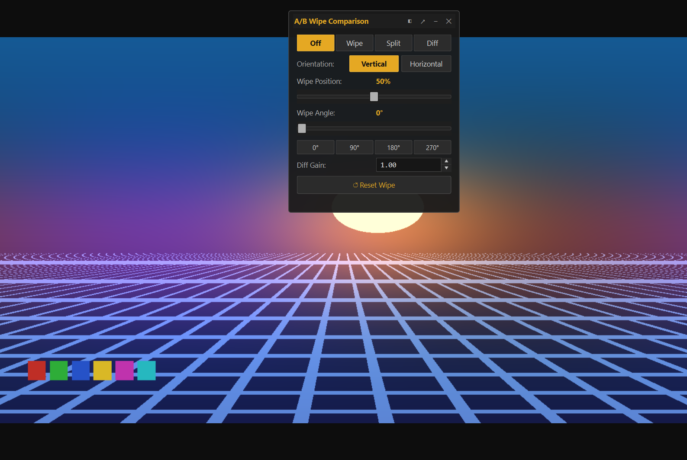

Production Use Cases & Step-by-Step Studio Workflows
This manual provides exhaustive, step-by-step operational procedures for every major VFX, animation, digital intermediate (DI), and supervisory workflow in OpenReview. Each use case details the exact UI panels, keyboard shortcuts, and mathematical inspection tools required to execute the workflow without friction.
1. Daily Studio Dailies, Playlist Assembly & Instant Version Stepping
During morning rounds or theatrical dailies, VFX Supervisors, Compositing Leads, and Coordinators review dozens of shot submissions across sequences and episodes. OpenReview's Inbuilt File Browser, Sources & Session Manager, and Version Control Engine eliminate manual file hunting.
-
Open the Inbuilt File Browser (Ctrl+B): Navigate to your show turnover directory (e.g.,
/shows/feature_vfx/dailies/2026_10_13/) and click Bookmark Current Folder so the path is permanently pinned for future sessions. Notice how OpenReview automatically collapses multi-thousand-frame EXR/DPX folders into single sequence entries (e.g.,sh010_comp_v004.####.exr [1001–1085]). -
Assemble Hierarchical Shot Bins (`): Drag and drop multiple sequences into the left Sources & Session Manager Dock. Click New Folder to organize shots by sequence (
SEQ_010,SEQ_020) or department (Comp,Lighting,FX). - Build a Continuous Editorial Sequence Playlist: In the Sources panel, create a Sequence View and add your daily shots in story order. Switch the timeline to Sequence Mode to play all shots back-to-back seamlessly like an editorial cut, or press PageDown / PageUp to jump clip-by-clip.
-
Instant Pipeline Version Stepping (Alt+Up / Alt+Down): While inspecting
sh010_comp_v004.####.exron frame1042, press Alt+Down to immediately swap the reader tosh010_comp_v003.####.exron the exact same frame1042and zoom/pan coordinates. Press Alt+Up to return tov004. -
Save Session State (Ctrl+S) or Clear (Ctrl+Shift+N): Save the assembled playlist, color grades, and supervisor notes to a portable
.ovrfile, or press Ctrl+Shift+N after the review to close and clear the session memory for the next department turnover.
2. Plate vs. Comp Comparison, Angled Wipes & Difference QC
Before publishing a composite for supervisor approval, compositors must verify that background plate grain, black levels, lens distortion outside the roto mask, and hair/motion-blur edges have not been degraded.

- Assign Primary (Slot A) and Reference (Slot B) Media: Load your latest Nuke composite render as Primary Slot A, and assign the ungraded original camera scan plate (or previous approved version) as Reference Slot B via the Sources Panel or Wipe HUD.
-
Engage Interactive Split Wipe (W): Press W to activate the split wipe line. Drag the line directly across actor hair edges and greenscreen despill boundaries. Drag near the wipe handle to rotate the split angle (e.g.,
15°or45°) to align with diagonal horizon lines or light sabers. Use Shift+W to flip orientation or Alt+W to reset to center. -
Verify Zero Unintended Plate Alteration via Difference Mode: Switch the comparison mode in the Wipe HUD (or Review → View Type) to Difference or Difference (Inverted). Increase the Diff Boost multiplier slider (up to
20x). Any area outside your roto/key matte that is not pure black (in Difference) or pure white (in Inverted Difference) immediately reveals accidental crop shifts, premult errors, or color space mismatches. -
Inspect Raw Pixel Grain & Black Toe (N & Shift+I): Zoom in to
400%(Ctrl+4) or800%(Ctrl+8), press N to switch from Bilinear smoothing to Nearest-Neighbor Pixelated mode, solo the Blue Channel (B) (where film/digital sensor noise is strongest), and press Shift+I (Invert Colors) or boost Gamma (Shift++) to verify that synthetic grain matches the plate seamlessly.
3. Multi-Layer Stacking & Multi-Tile Contact Sheet Layouts
When comparing 4+ lighting wedges, FX turbulence seeds, or continuity across an entire 9-shot sequence simultaneously, OpenReview provides Stacks and Layouts inside the SessionGraph.
- Create a Multi-Layer Stack for Rapid Take Cycling (Z / Shift+Z): Select multiple render versions or FX wedges in the Sources dock and create a Stack View. While playing or paused on a hero frame, tap Z (Cycle Forward) and Shift+Z (Cycle Backward) to flip between all layers in the stack with zero frame-reload latency.
-
Build a Tiled Contact Sheet Layout for Sequence Continuity: Select all shots in a sequence and create a Layout View. Choose between
Auto Grid,Side-by-Side (1xN),Over/Under (Nx1),2x2, or3x3grid modes in the Sources Panel or Media Stacking & Layout HUD. -
Optimize Multi-Stream Contact Sheet Performance: When playing 9 simultaneous 4K EXR sequences in a
3x3layout, set the Layout Scale dropdown to50%or25%so theLayoutCompositor(core/layout_compositor.py) composites tiles at real-time 24/60 FPS.
4. ACES / OpenColorIO v2 Color Pipeline, Show LUTs, ASC CDL & Zebra QC
Modern feature film pipelines render in scene-linear ACEScg and evaluate shots under show-specific 3D LUTs and per-shot ASC CDL grades from the Digital Intermediate (DI) house.
-
Configure Studio OCIO v2 Config: Open Color → OpenColorIO Configuration... (or set the
$OCIOenvironment variable). Select your studioconfig.ocio, choose the calibrated display device (e.g.,ACES 1.3 - SDR Video (Rec.709)), and verify that OpenReview auto-tags incoming.exrfiles asACEScgand.dpxfiles asCineon Log. -
Apply Show 3D LUT & Shot ASC CDL Grade: Navigate to Color → LUT / CDL and load the show's
.cubeor.3dllook LUT alongside the shot's.cdl/.cc/.cccfile. Use the checkable Enable Active LUT and Enable Active CDL menu items to A/B toggle the DI grade on and off during playback. -
Interactive ExposureSweep & Highlight Clipping Check: Sweep exposure down by 3 stops (Alt+- repeatedly) to verify that bright emissive FX (explosions, engine thrusters, sky domes) contain full high-dynamic-range detail rather than flat clipped values. Enable View → Show Out-of-Range Colors to highlight any super-white (
> 1.0) pixels in Magenta or negative values (< 0.0) in Cyan.
5. 32-Bit Floating-Point Pixel Probe, Area Samplers & Corrupted Pixel QC
A single NaN (Not-a-Number), Infinity, or negative sub-zero pixel from a division-by-zero shader or bad filter kernel can ruin a 3D LUT evaluation or produce black boxes when convolved with a defocus/glare node.
- Launch the Pixel Color Inspector HUD (F5) & Histogram (H): Press F5 and H to bring up the real-time color analysis HUDs.
- Pin Persistent Point & Area Box Samplers: Click the Eyedropper button in the Color Inspector HUD. Click key reference surfaces (e.g., skin tone, grey ball, chrome ball, deepest shadow) to pin persistent numbered samplers, or click-and-drag a rectangular box across a sky or greenscreen region to monitor live Min / Max / Mean floating-point RGBA values across the entire shot duration.
-
Verify Zero NaN / Inf / Negative Pixels: Watch the diagnostic status badges (
NaN: 0,Inf: 0,Neg: 0) in the Color Inspector HUD. If any badge turns red with a non-zero count, isolate channels (R, G, B, A) and use the area sampler to pinpoint the exact pixel coordinates for repair in Nuke or Houdini.
6. Multi-Pass CG OpenEXR Render Layer (AOV) Inspection
- Load Multi-Part EXR Sequence: Open a rendered CG sequence from Arnold, Karma, RenderMan, or V-Ray.
-
Open the EXR Multilayer Pass Inspector HUD: Toggle the EXR Passes HUD to view all embedded channels and layers (e.g.,
RGBA,diffuse_direct,diffuse_indirect,specular_direct,coat,transmission,emission,N,P,Z,crypto_asset). -
Diagnose Noise & Fireflies Per Pass: Click through individual lighting AOVs while playing the sequence in loop mode. If fireflies appear in the beauty render, isolating
specular_indirectvs.transmissionimmediately tells the lighting artist which sampling parameter to increase—saving hours of unnecessary global AA re-renders.
7. Stereoscopic 3D Convergence, Disparity & Ghosting QC
-
Select Stereo 3D Mode: From the Top Control Bar or View → Stereo 3D menu (or the Stereoscopic 3D HUD), switch between
Left Eye,Right Eye,Anaglyph (Red-Cyan),Side-by-Side (Split), andStereo Difference. -
Check Vertical Alignment & Retinal Rivalry: In
Stereo DifferenceorAnaglyphmode, verify that vertical disparity is zero and check specular reflections or water elements for uncomfortable retinal rivalry between eyes. - Adjust Horizontal Disparity Convergence: Use the horizontal pixel offset slider in the Stereoscopic 3D HUD to test depth plane placement and screen-plane convergence comfort in real time.
8. Supervisory Vector Markup, Review Notes & Annotated Export Pipeline

1024 using the Floating Annotation Palette (X).- Draw Vector Callouts (X & D): Press X to open the top Annotation Capsule Palette (or press D to jump straight into Freehand Pen mode). Sketch paint-overs, draw directional Arrows to point out tracking slips, place Circles around rig removals, and select the Text Tool to type callouts directly on the canvas.
- Navigate & Manage Annotated Keyframes (, / . & Ctrl+Shift+A): Step rapidly between annotated frames using , and .. Press Ctrl+Shift+A to open the Annotation & Review Notes Manager, where you can type detailed multi-line supervisor notes per frame.
-
Export Review Reports & Burned-In Media (Ctrl+Shift+E):
- In the Annotation Manager, export structured review notes to
CSV(for ShotGrid/spreadsheet import),JSON, or a formattedMarkdowndocument. - Press Ctrl+Shift+E to open the Export Media Dialog, choose Annotated Frames Only (or Full Sequence / In-Out Range), check Burn-In Annotations & Color Grading, and export reference PNGs or a QuickTime
.movfor the artist.
- In the Annotation Manager, export structured review notes to
9. Multi-User Remote Dailies Collaboration Across Workstations
-
Start Hosting a Dailies Room (Ctrl+Shift+D): The Dailies Coordinator or VFX Supervisor presses Ctrl+Shift+D to open the Remote Dailies Sync HUD, enters a Room Name (e.g.,
SEQ010_Morning_Dailies) and Username, and clicks Host Session on TCP port9090. - Peers Connect & Auto-Match Local High-Res Media: Remote artists open the same panel, enter the Host IP and Port, and click Connect. When the Host loads a shot, each peer's OpenReview instance resolves and loads the matching uncompressed sequence from their local/SAN storage.
- Synchronized Playback, Live Whiteboard & Presenter Hand-Off: As the Presenter plays, pauses, scrubs, or adjusts Exposure/Gamma, every connected artist's viewport updates in real time. Any participant can draw vector annotations on the shared frame or type in the room chat. If an artist wants to show an issue, the Host clicks Make Presenter to hand over transport control.
10. Dialogue Lip-Sync QC & Audio Offset Calibration
-
Load Video with Audio or Pair External WAV Stem: Open a QuickTime
.movor load an external.wavdialogue stem alongside an image sequence. - Scrub Phonemes with 60ms Audio Bursts: Ensure Audio → Audio Scrubbing on Drag is checked. Drag the timeline playhead (or scrub horizontally on the viewport canvas) across character dialogue—OpenReview plays a crisp 60ms audio slice on each frame so animators can verify exact jaw/lip sync on plosive consonants (P, B, T, K).
-
Calibrate Editorial Handle Offsets: If the audio stem includes a 2-second 2-pop leader or 8-frame head handle, open Audio → Offset Audio... and enter the exact Offset (Seconds) or Offset (Frames). The
AudioEnginerecalculates frame alignment immediately and maintains sub-frame lock within a 45ms drift window.
11. Executive, Director & Client Presentation Screening
-
Engage Theatrical Aspect Ratio Matte (Ctrl+M & Shift+M): Press Ctrl+M to select the production's theatrical framing (e.g.,
2.35:1 Cinemascopeor1.85:1 Flat) and press Shift+M until the matte opacity is100%solid black. - Enter Borderless Fullscreen (F12) & Presentation Mode (Ctrl+P): Press F12 and Ctrl+P. All window borders, menu bars, top toolbars, side docks, timelines, and status bars vanish—leaving only the pure color-calibrated image centered on a pitch-black screen.
- Drive Screening Completely via Hotkeys: Use Space, J/K/L shuttling, PageDown/PageUp (next/previous shot), and Alt+Up/Alt+Down (version stepping) without ever exposing UI chrome to the client. Press Ctrl+P or Escape to restore the workspace.